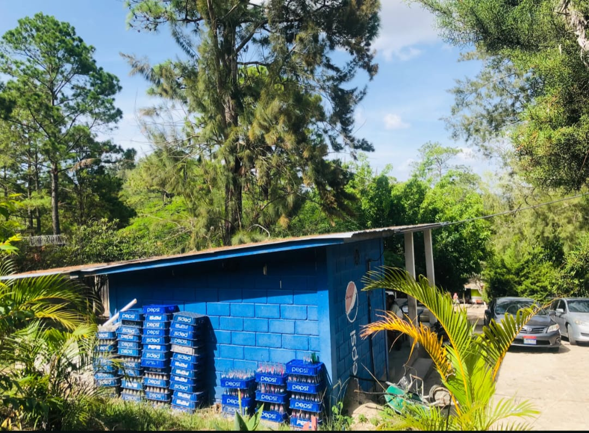
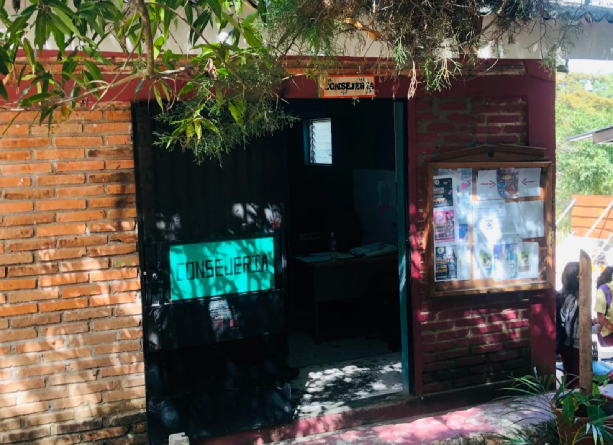

Informática
Tecnología, innovación y desarrollo al servicio del futuro.
Conocer másFormamos jóvenes competentes, éticos y comprometidos con su comunidad y con su futuro.
El Instituto Humanal Técnico Francisco Miranda trabaja para brindar una educación integral, formando estudiantes con conocimientos, valores, disciplina y compromiso.
Nuestra comunidad educativa impulsa el desarrollo académico, técnico, cultural y deportivo de nuestros jóvenes.
Conocer nuestra historia

Formación profesional para preparar a nuestros estudiantes para los desafíos del futuro.
Tecnología, innovación y desarrollo al servicio del futuro.
Conocer másFormación para administrar recursos con responsabilidad y eficiencia.
Conocer másInnovación y calidad en procesos agroindustriales.
Conocer másFormación musical, disciplina, trabajo en equipo y pasión.
Actividad física, compañerismo y desarrollo deportivo.
Espacios prácticos para aprender haciendo.
Conocer másFormación integral basada en principios y ética.
Conocer másConoce a quienes forman parte de nuestra comunidad educativa.





Educación, valores, talento y compromiso al servicio de nuestra comunidad.